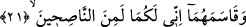
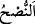
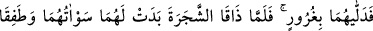
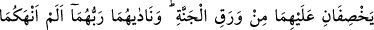
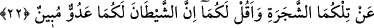
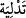

üstün olmalarını gerektirmez. Çünkü insanda da meleklerde bulunan bazı özelliklerden
daha üstünlerinin bulunması mümkündür. Şu halde ayette geçen Hz. Âdem ve Havvâ’nın
melek olmalarından maksad, beşerî hakîkatlerinin melekî hakîkate döndürülmesi
değildir. Çünkü bu muhaldir.
Şeyhülislâm Sa‘di Efendi der ki: “Bu konu müzâkereye açıktır. Çünkü Eş’ariyye’ye
göre aralarında benzerlik olan varlıkların birbirine döndürülmesine mâni yoktur.”
Bil ki Allah Teâlâ insan, melek ve cinleri görünüş ve şekil itibariyle birbirinden
ayırmış, farklı yaratmıştır. Zâhiren ve bâtınen insan yapısında yaratılan insandır. Eğer
bir insan melek yapısına döndürülürse, insan olmaktan çıkar. Ancak melek ve şeytan
farklı dış görünüşlere (insan sûretine) büründüklerinde kendi hakîkatlerinden çıkmazlar.
21. Ve onlara: Ben gerçekten size öğüt verenlerdenim, diye yemin etti.
Yemin yalnız İblis tarafından yapılmıştır. Ancak ayette onun yemini, (bir fiili karşılıklı
yapmayı ifâde eden) “müfâale” vezninde gelmiştir. Bu, başka bir şahsın yeminine
karşılık olarak daha ağır yemin eden kimse gibi şeytanın onlara kuvvetle yemin ettiğini
belirtmek içindir.
“Ve onlara: “Elbette ben size” söylediklerimle “öğüt verenlerdenim.” diye yemin
etti.”
“
” (öğüt, nasihat), başkası hakkında onun iyiliğini isteyerek elinden gelen gayreti
göstermek demektir.
22. Böylece onları hile ile aldattı. Ağacın meyvesini tattıklarında ayıp yerleri
kendilerine göründü. Ve cennet yapraklarından üzerlerini örtmeye başladılar.
Rableri onlara: Ben size o ağacı yasaklamadım mı ve şeytan size apaçık bir
düşmandır, demedim mi? diye nidâ etti.
“Böylece onları” yalan yere Allah adına yemin edip “aldatarak aşağı indirdi.”
Ağacın meyvesinden yedirtti. Onları yüksek mertebe olan Allah’a itaat mertebesinden
aşağıya, Allah’ın gazab ettiği duruma indirdi.
“
” (indirmek), bir şeyi yukarıdan aşağıya doğru bırakmaktır. Kovayı kuyuya